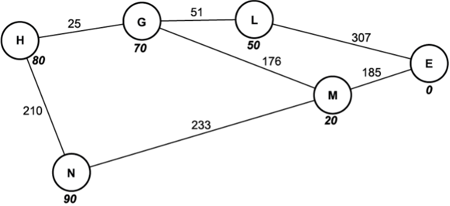
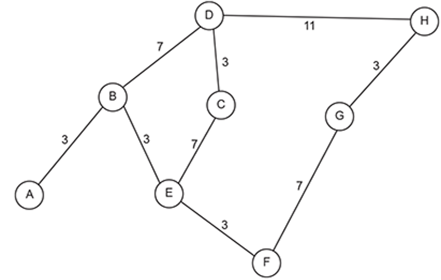
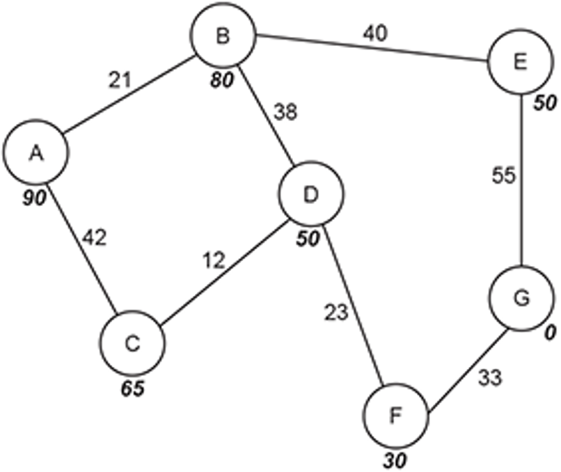
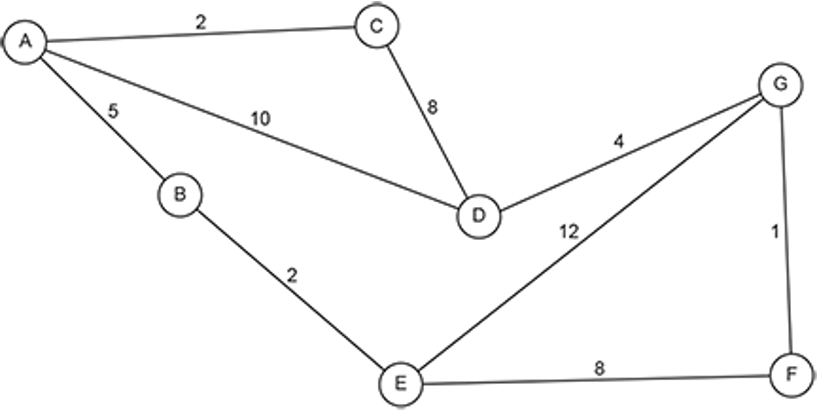

Algorithms – Notes
Binary Search vs Linear Search — Comparison
| Feature | Linear Search | Binary Search |
|---|---|---|
| Works on | Any list | Sorted lists only |
| Method | Checks each item in turn | Repeatedly halves the list |
| Best for | Small or unsorted lists | Large sorted lists |
| Time complexity | O(N) |
O(log N) |
| Main advantage | Simple and flexible | Very fast on large datasets |
| Main disadvantage | Slow on large lists | Requires sorted data |
Linear Search — Pseudocode

letters_list = ['A','F','B','E','D','G','C']
position = 0
found = False
search_item = INPUT
WHILE position < LENGTH(letters_list) AND found == False
IF letters_list[position] == search_item THEN
PRINT "Item found at position", position
found = True
ELSE
position = position + 1
ENDIF
ENDWHILE
IF found == False THEN
PRINT "Item not found"
ENDIF
Complexity: O(N)
Binary Search — Pseudocode
mylist = [1, 2, 5, 7, 11, 14]
item = INPUT
found = False
first = 0
last = LENGTH(mylist) - 1
WHILE found == False AND first <= last
midpoint = (first + last) DIV 2
IF mylist[midpoint] == item THEN
PRINT "Item found at index", midpoint
found = True
ELSE
IF item < mylist[midpoint] THEN
last = midpoint - 1
ELSE
first = midpoint + 1
ENDIF
ENDIF
ENDWHILE
Complexity: O(log N)
Trace Table — Binary Search (Search for 50)
List: [1, 5, 20, 35, 50, 65, 70]
| Step | first | last | midpoint | value | Comparison | Action |
|---|---|---|---|---|---|---|
| 1 | 0 | 6 | 3 | 35 | 35 < 50 | first = 4 |
| 2 | 4 | 6 | 5 | 65 | 65 > 50 | last = 4 |
| 3 | 4 | 4 | 4 | 50 | 50 == 50 | Found |
Trace Table — Linear Search (Search for 5)
List: [10, 8, 1, 21, 7, 32, 5, 11, 0]
| Step | position | value | Comparison | Found? |
|---|---|---|---|---|
| 1 | 0 | 10 | ≠ 5 | No |
| 2 | 1 | 8 | ≠ 5 | No |
| 3 | 2 | 1 | ≠ 5 | No |
| 4 | 3 | 21 | ≠ 5 | No |
| 5 | 4 | 7 | ≠ 5 | No |
| 6 | 5 | 32 | ≠ 5 | No |
| 7 | 6 | 5 | = 5 | Yes |
Bubble Sort
Bubble sort works by repeatedly comparing adjacent items in a list. If the item on the right is smaller than the item on the left, the two values are swapped.
This process is repeated until a complete pass through the list occurs with no swaps, meaning the list is sorted.
How Bubble Sort Works
- Compare the first and second items
- Swap if the first is greater than the second
- Move to the next pair
- Repeat passes until no swaps occur
- Largest values gradually move to the end of the list

Algorithm (Pseudocode)
swapMade = True
WHILE swapMade == True
swapMade = False
position = 0
FOR position = 0 TO listLength - 2
IF list[position] > list[position + 1] THEN
temp = list[position]
list[position] = list[position + 1]
list[position + 1] = temp
swapMade = True
ENDIF
NEXT position
ENDWHILE
The loop continues until a full pass is completed with
swapMade remaining False.
Advantages
- Simple to understand and implement
- Works well for very small lists
Disadvantages
- Even when the list is almost sorted, comparisons must still be made
- Requires multiple passes through the data
- Very inefficient for large data sets
Complexity: O(n²) — polynomial
Bubble Sort – Trace Table
Trace the bubble sort algorithm on the following list:
Initial list: [65, 40, 30, 10, 100, 6]
| Pass | Comparison | List State | Swap? |
|---|---|---|---|
| 1 | 65 > 40 | [40, 65, 30, 10, 100, 6] | Yes |
| 1 | 65 > 30 | [40, 30, 65, 10, 100, 6] | Yes |
| 1 | 65 > 10 | [40, 30, 10, 65, 100, 6] | Yes |
| 1 | 65 < 100 | [40, 30, 10, 65, 100, 6] | No |
| 1 | 100 > 6 | [40, 30, 10, 65, 6, 100] | Yes |
| 2 | 40 > 30 | [30, 40, 10, 65, 6, 100] | Yes |
| 2 | 40 > 10 | [30, 10, 40, 65, 6, 100] | Yes |
| 2 | 40 < 65 | [30, 10, 40, 65, 6, 100] | No |
| 2 | 65 > 6 | [30, 10, 40, 6, 65, 100] | Yes |
| 3 | 30 > 10 | [10, 30, 40, 6, 65, 100] | Yes |
| 3 | 30 < 40 | [10, 30, 40, 6, 65, 100] | No |
| 3 | 40 > 6 | [10, 30, 6, 40, 65, 100] | Yes |
| 4 | 30 > 6 | [10, 6, 30, 40, 65, 100] | Yes |
| 5 | 10 > 6 | [6, 10, 30, 40, 65, 100] | Yes |
| 6 | No swaps in pass | [6, 10, 30, 40, 65, 100] | No |
The algorithm stops when a full pass is completed with no swaps.
Insertion Sort
Insertion sort is used to sort a “live” list of data. It builds a sorted section of the list one item at a time by inserting each new value into its correct position among the already-sorted values.
How Insertion Sort Works
- Start by looking at the second item in the list.
- Compare it to the items before it and insert it into the correct place.
- Move to the next item and repeat until the end of the list is reached.

Algorithm (OCR-style Pseudocode)
FOR position = 1 TO LENGTH(array) - 1
currentValue = array[position]
pos = position
WHILE pos > 0 AND array[pos - 1] > currentValue
array[pos] = array[pos - 1]
pos = pos - 1
ENDWHILE
array[pos] = currentValue
NEXT position
Advantages
- Very high performance on small lists.
- Works well on “live” data where items are still arriving.
Disadvantages
- Poor performance on large lists.
- Not as fast as merge sort for large data sets.
Complexity: O(n²) — polynomial
Insertion Sort – Trace Table (Exam Practice)
Trace insertion sort on the list:
[8, 5, 7, 1, 9, 3]
| Pass (position) | currentValue | Shifts / Insertion | List State After Pass |
|---|---|---|---|
| 1 | 5 | 8 shifts right → insert 5 at index 0 | [5, 8, 7, 1, 9, 3] |
| 2 | 7 | 8 shifts right → insert 7 at index 1 | [5, 7, 8, 1, 9, 3] |
| 3 | 1 | 8, 7, 5 shift right → insert 1 at index 0 | [1, 5, 7, 8, 9, 3] |
| 4 | 9 | No shifts needed → 9 stays in place | [1, 5, 7, 8, 9, 3] |
| 5 | 3 | 9, 8, 7, 5 shift right → insert 3 at index 1 | [1, 3, 5, 7, 8, 9] |
Each pass grows the sorted portion on the left side of the list.
Merge Sort
Merge sort can be used efficiently on very large lists of data. It uses a divide and conquer approach.
How Merge Sort Works
- Split the list into sub-arrays of one element.
- Merge each sub-array into a new sorted array.
- Repeat until a single sorted array is produced.

Output: A sorted array
Algorithm (High-Level Steps)
Step 1: Split the array into sub-arrays of 1 element Step 2: Merge sub-arrays into sorted arrays Step 3: Repeat merging until one sorted array remains
Merge Sort (Recursive Pseudocode)
function mergeSort(list)
if LENGTH(list) <= 1 then
return list
endif
mid = LENGTH(list) DIV 2
left = list[0 : mid]
right = list[mid : LENGTH(list)]
leftSorted = mergeSort(left)
rightSorted = mergeSort(right)
return merge(leftSorted, rightSorted)
endfunction
Merge Procedure (Pseudocode)
function merge(left, right)
result = empty list
WHILE left not empty AND right not empty
IF left[0] <= right[0] THEN
add left[0] to result
remove left[0] from left
ELSE
add right[0] to result
remove right[0] from right
ENDIF
ENDWHILE
add remaining elements of left to result
add remaining elements of right to result
return result
endfunction
Advantages
- Very high performance on large lists.
- Consistent speed regardless of initial order.
Disadvantages
- Uses a lot of additional memory.
- More complex to implement than simple sorts.
Complexity:
O(n log n) — logarithmic
Merge sort is substantially faster than bubble sort
and selection sort for large data sets.
Quick Sort
Quick sort uses a divide-and-conquer approach. It works by selecting a pivot value and partitioning the list into values less than the pivot and values greater than the pivot.
How Quick Sort Works
- Choose a pivot value (often the first element)
- Use a left pointer and a right pointer
- Move pointers inward, swapping values where required
- Place the pivot in its correct position
- Repeat on the left and right sublists

Algorithm (OCR-Style Pseudocode)
FUNCTION partition(list, first, last)
pivotValue = list[first]
leftMark = first + 1
rightMark = last
done ← FALSE
WHILE done = FALSE
WHILE leftMark <= rightMark AND list[leftMark] <= pivotValue
leftMark = leftMark + 1
ENDWHILE
WHILE list[rightMark] >= pivotValue AND rightMark >= leftMark
rightMark = rightMark − 1
ENDWHILE
IF rightMark < leftMark THEN
done = TRUE
ELSE
SWAP list[leftMark] WITH list[rightMark]
ENDIF
ENDWHILE
SWAP list[first] WITH list[rightMark]
RETURN rightMark
ENDFUNCTION
PROCEDURE quickSortHelper(list, first, last)
IF first < last THEN
splitPoint = partition(list, first, last)
quickSortHelper(list, first, splitPoint − 1)
quickSortHelper(list, splitPoint + 1, last)
ENDIF
ENDPROCEDURE
Advantages
- Much faster than bubble sort and insertion sort on large lists
- Efficient average-case performance
Disadvantages
- Uses recursion, which can require large amounts of memory
- Risk of stack overflow for very large lists or poor pivot choices
Complexity:
O(n log n) — logarithmic (average case)
Mark Scheme Points (Typical)
- Uses divide-and-conquer
- Selects a pivot value
- Uses left and right pointers
- Swaps values when required
- Splits list into two sublists
- Recursively sorts sublists
- Repeats until all sublists contain one element
Shortest Path
Shortest Path Algorithms
Shortest path algorithms are used to find the minimum-cost path between nodes in a graph. The “cost” may represent distance, time, or any weighted value on the edges.
Common shortest path algorithms include:
- Dijkstra’s Algorithm – Finds the shortest path from a single start node to all other nodes in a graph with non-negative edge weights. It repeatedly selects the unvisited node with the smallest tentative distance.
- A* (A-star) Algorithm – An extension of Dijkstra’s algorithm that uses a heuristic to estimate the remaining distance to the goal. This helps it find the shortest path more efficiently by exploring promising routes first.
- Breadth-First Search (BFS) – Can be used as a shortest path algorithm in unweighted graphs, as it explores nodes level by level.
These algorithms are widely used in navigation systems, games, network routing, and AI to determine the most efficient route between locations.
Find the shortest path from A to J using Dijkstra’s Algorithm
- The purpose of Dijkstra's algorithm finds the shortest path between nodes / vertices in a weighted graph.
- Selects the unvisited node with the shortest path.
- Calculates the distance to each unvisited neighbor
- Updates the distance of each unvisited neighbor if smaller
- Once all neighbours have been visited mark node as visited
Algorithm
# Next Current Node will be the node with the lower F value
Mark the start node as a distance of 0 from itself and all other nodes as an infinite distance
from the start node.
WHILE the destination node is unvisited:
Go to the closest unvisited node to A (initially this will be A itself)
Call this the current node.
FOR every unvisited node connected to current node
Calculate the distance to the current plus the distance of the edge to unvisited
If this distance is less than the currently recorded shortest distance, make it the new shortest distance.
NEXT Connected node
Mark the current node as visited.
ENDWHILE

Visited order: A → C → F → G → D → E → H → I → J
| Node | Distance from A | Previous Node |
|---|---|---|
| A (v) | 0 | - |
| B (v) | ∞ 75 | A |
| C (v) | ∞ 10 | A |
| D (v) | ∞ 95, 80 | F, B |
| E (v) | ∞ 65 | C |
| F (v) | ∞ 40 | C |
| G (v) | ∞ 50 | F |
| H (v) | ∞ 90 | G |
| I (v) | ∞ 90 | D |
| J (c) | ∞ 135, 105 | E, H |
Final shortest path: A → C → F → G → H → J
A*
The A* Algorithm is a general path-finding algorithm which is an improvement of Dijkstra’s Algorithm.
The structure in graph is searched using the A* algorithm making use of the heuristic values
Heuristic values are Weighting/cost based on estimated distance from final node. The purpose of heuristic values in the A* algorithm are used to speed up process of finding solution.
A heuristic is also used – usually an approximate distance from a node to the final node.
This aims to make the shortest path finding process more efficient and much quicker.
How effective the A* algorithm is, however, depends largely on the accuracy of the heuristics used.
Will not visit all nodes. Will follow the route with the lowest F value
Stops when current node is the destination node
Begin at the start node and make this the current node.
WHILE the destination node is unvisited:
For each open node directly connected to the current node:
Add to the list of open nodes
Add the distance from the start (g) to the heuristic estimate of the distance (h)
Assign this value (f) to the node
NEXT connected node
Make the unvisited node with the lowest F value the current node
ENDWHILE

| Node | Distance travelled (g) | Heuristic (h) | Distance + Heuristic (f) | Previous node |
|---|---|---|---|---|
| H | 0 | 80 | 80 | - |
| G | 25 | 70 | 95 | H |
| N | 210 | 90 | 300 | H |
| L | 51 + 25 = 76 | 50 | 126 | G |
| M | 176 + 25 = 201 | 20 | 221 | G |
| E | 307 + 76 = 383 | 0 | 383 | L |
Final path: H → G → L → E
Check Your Understanding – Questions
1(a) A program makes use of searching and sorting algorithms.
The following incomplete pseudocode algorithm uses a binary search to find the
integer numberToFind in the array array.
It returns the index of the array or -1 if the integer is not found.
Complete the pseudocode algorithm.
function binarySearch(array, .....................................)
lowerbound = 0
upperbound = array.length - 1
while true
if (upperbound < lowerbound) then
return .............................................
else
mid = (upperbound + lowerbound) ...................................
if (array[mid] < numberToFind) then
lowerbound = mid .............................................
elseif (array[mid] > numberToFind) then
upperbound = mid .............................................
else
return .............................................
endif
endif
endwhile
endfunction
function binarySearch(array, numberToFind)
lowerbound = 0
upperbound = array.length - 1
while true
if (upperbound < lowerbound) then
return -1
else
mid = (upperbound + lowerbound) DIV 2
if (array[mid] < numberToFind) then
lowerbound = mid + 1
elseif (array[mid] > numberToFind) then
upperbound = mid - 1
else
return mid
endif
endif
endwhile
endfunction
1(b) An array stores the following data:
20 8 33 16
(i) Describe how the given data will be sorted into
descending numerical order using an
insertion sort.
You should refer to the data in this array throughout your answer.
[5]
(ii) The size of the array has now been increased to seven elements. The insertion sort algorithm needs to be tested to ensure it sorts a range of test data into descending numerical order.
For example, the test data below will test to see if the insertion sort will sort data in the opposite order:
1 2 3 4 5 6 7
Give two other different sets of data that can be used
to test the insertion sort and state the
purpose of each set of test data.
Each test needs to have a different purpose.
[2]
Mark Scheme Answer:
(i)
- 20 becomes the initial sorted list
- 8 is compared with 20 and placed after it → [20, 8]
- 33 is compared with 20 and 8, both are shifted right and 33 is inserted at the start → [33, 20, 8]
- 16 is compared with 33, 20 and 8
- 16 is inserted between 20 and 8 → [33, 20, 16, 8]
- This process continues until all elements are in descending order
(ii)
-
Test Data: 7 6 5 4 3 2 1
Purpose: Tests that the algorithm correctly handles data that is already in descending order -
Test Data: 1 7 2 6 3 5 4
Purpose: Tests that the algorithm correctly sorts mixed, unsorted data
2. Kofi and Zac both write a different pseudocode algorithm to read the data from a text file into an array.
Kofi's Algorithm
fileName = "data.txt"
fileToRead = openRead(fileName)
for x = 0 to 1000
anyData = fileToRead.endOfFile()
if NOT anyData then
x = 1001
else
dataValue = fileToRead.readLine()
array[x] = dataValue
endif
next x
fileToRead.close()
Zac's Algorithm
function readData(fileName)
array data[100]
x = 0
fileToRead = openRead(fileName)
while NOT fileToRead.endOfFile()
data[x] = fileToRead.readLine()
x = x + 1
endwhile
return data
endfunction
The solution needs to be used in different programs. Each program will use a different text file where the number of lines in the text file is unknown.
Compare the suitability of each algorithm for the given problem.
You should include:
- the suitability of the programming techniques including the use of loops
- how effectively the solution meets the requirements
Kofi’s algorithm is less suitable because it uses a count-controlled loop that runs up to 1000 times, which is inappropriate when the number of lines in the file is unknown. It may stop reading data early or waste processing time. The file name is hard-coded, meaning it cannot easily be reused in other programs or with different files, reducing flexibility. Although the file is correctly closed, the algorithm cannot be reused easily as it is not written as a function.
Zac’s algorithm is more suitable because it uses a condition-controlled loop that continues until the end of the file is reached, making it appropriate when the number of lines is unknown. The algorithm is written as a function and takes the file name as a parameter, allowing it to be reused in different programs and with different files. This makes it more modular and flexible. However, the fixed array size of 100 could cause problems if the file contains more than 100 lines.
Overall, Zac’s solution better meets the requirements due to its use of a suitable loop, parameterisation, and reusability.
3. Question
i. A sorting algorithm has a best time complexity of O(n). Describe what is meant by the best time complexity O(n) for a sorting algorithm.
ii. Another sorting algorithm has a worst space complexity of O(log(n)). Describe what is meant by the worst space complexity O(log(n)) for a sorting algorithm.
iii. Identify the time complexity that means the time will not change even when the number of items increases.
iv. Identify the space complexity that means the amount of memory (space) used will double each time a new item is included.
Mark scheme answers:
i. Linear — the time will increase in direct proportion to the number of items.
ii. Logarithmic — the additional memory space required grows at a decreasing rate as the number of items increases.
iii. Constant / O(1).
iv. Exponential / O(2n) (also accepted: O(Kn)).
4(a) The following strings are stored in an array:
“rainbow” “moon” “sun” “stars” “clouds” “tornado”
Explain how a linear search would search the array for the index that stores
“clouds”.
The algorithm compares the first element in the array (“rainbow”) with “clouds”. If it is not equal, it moves to the next element (“moon”) and repeats the comparison. This process continues for each element in order until “clouds” is found, at which point the index is returned. If the end of the array is reached without finding “clouds”, the search stops.
4(b) State why a binary search cannot be used in this example.
A binary search cannot be used because the data in the array is not sorted into order.
4(c) Show how an insertion sort will sort the given data into ascending
alphabetical order:
“rainbow” “moon” “sun” “stars” “clouds” “tornado”
First, “rainbow” is taken as the sorted list. “moon” is compared to “rainbow” and inserted before it. “sun” is compared and placed after “rainbow”. “stars” is compared and inserted between “sun” and “rainbow”. “clouds” is compared and inserted at the start of the list. Finally, “tornado” is compared and placed at the end. After all passes, the list is sorted in ascending alphabetical order.
5(a)(i) A program stores data in a 1-dimensional array.
The program needs to search the array for a number that is input by the user.
i. Describe how a linear search will search the data in the array for a number that has been input.
[5]
• Start at the first element in the array and compare it to the number to find.
• If it matches, stop and report success (found / return position).
• If it does not match, move to the next element and compare again.
• Repeat until the item is found or the end of the array is reached.
• If the end is reached without a match, report not found.
5(a) ii. State why you would use a linear search rather than a binary search.
[1]
Because the data does not need to be sorted for a linear search (binary search requires sorted data).
5(b) Describe how an array can be used to store and access data in a stack data structure.
[4]
• Use a stack pointer to indicate the top of the stack (the last element added).
• PUSH: add new data at the next free position (stackPointer + 1), check for overflow, then increment the stack pointer.
• POP: remove data from the current top position (stackPointer), check for underflow, then decrement the stack pointer.
• Access is via Push() and Pop() operations using the stack pointer to index the array.
6(i) The array numbers contains 356 numbers to be sorted by the bubble sort algorithm.
State the maximum number of passes a bubble sort would need to complete to sort 356 numbers into order.
[1]
355
6(ii) State the name of one other sorting algorithm.
[1]
Insertion sort
7(a) Fig. 5 shows a graph data structure representing a small section of a parcel delivery network. Each node represents an address where deliveries need to be made. The edges show the possible routes and distances between these deliveries.
Give one reason why the graph is a visualisation of the problem. [1]
Mark scheme answer (any one):
- Symbols are used to represent the address
- The edges represent possible connections between addresses, not the actual physical routes
8(a) Fig. 5 shows a graph data structure representing a small section of a parcel delivery network. Each node represents an address where deliveries need to be made. The edges show the possible routes and distances between these deliveries.
Give one reason why the graph is a visualisation of the problem. [1]
Mark scheme (any one):
- Symbols are used to represent the address
- The edges represent possible connections between addresses not the actual physical routes
Question 8(b)
(i) Show how Dijkstra’s algorithm can be used on the graph shown in Fig. 5 to find the shortest path from the start node A and the end node H.
You should state the nodes on the final path and the overall distance. Show your working.
You may choose to use a table to give your answer. [6]
Mark scheme:
(i) Dijkstra table (example full-mark working)
Node Distance travelled Previous node
A 0 / - N/A / -
B 3 A
C 13 E
D 10 B
E 6 B
F 9 E
G 16 F
H 21 then 19 D then G
Final Path = A, B, E, F, G, H
Distance = 19(ii) Give a similarity and difference between the performance of Dijkstra’s algorithm and the performance of A* algorithm. [2]
Similarity (one):
- Both always find the shortest route
- Both are pathfinding algorithms
Difference (one):
- A* is (usually) more efficient / Dijkstra’s is (usually) slower
- A* uses heuristics to find a solution faster / Dijkstra’s does not use heuristics
9. A computer program stores data in an array named words The data in the array needs to be searched for a value that the user inputs.
i. One example of a searching algorithm is a binary search. Identify the precondition for a binary search. [1]
ii. A second example of a searching algorithm is a linear search. Describe how a linear search works.
[4]10(a) A veterinary surgery uses a two dimensional array to store bookings for customers to bring in their animal to see the vet. There are ten possible booking slots during each day.
An example of the two dimensional array is shown in Fig. 1.

Fig. 1 (2D array bookings table)
- The first column stores the booking slot number, ranging between 1 and 10.
- The second column stores the time of the appointment.
- The third column stores the customerID of the customer who has booked that slot.
If a customerID has been entered for a booking slot then the booking slot has been taken. If no customerID has been entered then the booking slot is available for booking.
When customers make an appointment they often ask for the first available booking slot. Describe how a linear search could be used for this purpose. [3]
Mark scheme answer (points to include):
- Start from the beginning / first booking slot
- Search each slot in order / sequentially
- Stop when the first empty slot is found
10(b) A function findFirst is used to find the first available appointment. Write the function findFirst that will find the first available appointment and return the booking slot number. If no appointments are available then the function should return "-1".
You should write your function using pseudocode or program code. [7]
Mark scheme (example solution):
function findFirst()
count = 0
do
found = false
if customerID[2, count] == "" then
found = true
else
count = count + 1
endif
until count == 10 or found == true
if found == True
return customerID[0, count]
else
return -1
endif
endfunctionMark points (what the examiner is looking for):
- Correctly define a function findFirst
- Logic to check the first slot, then the next slot(s)
- A suitable loop to check all slots
- Return the available booking slot number
- Return -1 if no slots are available
- Sensible variable names + indentation
12(a).Trudi would like to sort an array of numbers into order.
The numbers before they have been sorted can be seen here.
| 89 | 25 | 75 | 37 | 45 |
Trudi will use a bubble sort to put these numbers into order from smallest to largest.
Show the first pass of the bubble sort. You should clearly show each comparison made.
Mark scheme answer (first pass):
| 89 | 25 | 75 | 37 | 45 |
| 25 | 89 | 75 | 37 | 45 |
| 25 | 75 | 89 | 37 | 45 |
| 25 | 75 | 37 | 89 | 45 |
| 25 | 75 | 37 | 45 | 89 |
12(b) Trudi has written a procedure, bubbleSort.
01 procedure bubbleSort(numbers)
02 do
03 sorted = true
04 for count = 0 to numbers.length -2
05 if numbers[count] > numbers[count+1] then
06 temp = numbers[count+1]
07 numbers[count+1] = numbers[count]
08 numbers[count] = temp
09 sorted = false
10 endif
11 next count
12 until sorted == true
13 endprocedurei. Identify a line in the procedure bubbleSort where a decision is taken.
ii. Identify the name of the parameter used in the procedure bubbleSort.
iii. Describe the purpose of the temp variable in the procedure bubbleSort.
iv. Describe the purpose of the sorted variable in the procedure bubbleSort.
Mark scheme answers:
i. Line 5 (allow line 4 and 12).
ii. numbers
iii. To temporarily hold data… / …to allow the contents of two variables to be swapped.
iv. Signifies whether or not any swaps have been made in a pass; if still set to true at the end of a pass, then the list is sorted.
13(a) A one dimensional array holds data that needs to be sorted.
Describe how a quicksort would sort data into ascending order.
[5]
Mark scheme answer (indicative):
- Choose a pivot / identify start and end pointers
- Compare each element to the pivot… / compare start and end pointers
- Put items < pivot in the left sublist
- Put items > pivot in the right sublist
- Choose a pivot in each sublist
- If start pointer is larger than end pointer…
- …then swap data items around
- And repeat the process until each item becomes a pivot
13(b) Explain why a quicksort is known as a divide and conquer algorithm.
[2]
Mark scheme answer (indicative):
- decomposing data sets into smaller subsets
- and then sorting each split subset
- until each subset is sorted
- and then combining the subsets to provide a solution
14(a)(i) The pseudocode function binarySearch() performs a binary search on the array
dataArray that is passed as a parameter. The function returns the array index of
searchValue within the array, and -1 if it is not in the array.
The pseudocode binary search algorithm is incomplete.
Complete the algorithm by filling in the missing statements.
function binarySearch(dataArray:byref, upperbound, lowerbound, ....................)
while true
middle = lowerbound + ((upperbound - lowerbound) ....................)
if upperbound < lowerbound then
return ............................
else
if dataArray[middle] < searchValue then
lowerbound = ............................
elseif dataArray[middle] > searchValue then
upperbound = ............................
else
return ............................
endif
endif
endwhile
endfunction[6]
Completed algorithm:
function binarySearch(dataArray:byref, upperbound, lowerbound, searchValue)
while true
middle = lowerbound + ((upperbound - lowerbound) DIV 2)
if upperbound < lowerbound then
return -1
else
if dataArray[middle] < searchValue then
lowerbound = middle + 1
elseif dataArray[middle] > searchValue then
upperbound = middle - 1
else
return middle
endif
endif
endwhile
endfunction14(a)(ii) The algorithm uses a while loop.
State a different type of loop that could be used instead of the while loop in the given algorithm.
[1]
For example: a for loop (or repeat-until loop).
15(i) Some of the characters in a game will move and interact independently. Taylor is going to use graphs to plan the movements that each character can take within the game.
DancerGold is one character. The graph shown in Fig. 1 shows the possible movements that DancerGold can make.
DancerGold’s starting state is represented by node A. DancerGold can take any of the paths to reach the end state represented by node G.
The number on each path represents the number of seconds each movement takes.
The number in bold below each node is the heuristic value from A.
Define the term heuristic in relation to the A* algorithm.
[2]
Heuristic (A*):
- A rule of thumb / estimate / guess
- That estimates the distance / cost from each node to the destination node
- To speed up the process of finding a solution (by indicating which paths to follow first)
15(ii). Perform an A* algorithm on the graph shown in Fig. 1 to find the shortest path from the starting node to the end node. Show your working, the nodes visited and the distance. You may choose to use the table below to give your answer.
| Node | Distance travelled | Heuristic | Distance travelled + Heuristic | Previous node |
|---|---|---|---|---|
Final path: ________________________________
Distance: _________________________________
[8]
Visited / working table (one valid marking version):
| Node | Distance travelled | Heuristic | Distance travelled + Heuristic | Previous node |
|---|---|---|---|---|
| A (✓) | 0 | 90 | 90 | |
| B (✓) | 21 | 80 | 101 | A |
| C (✓) | 42 | 65 | 107 | A |
| D (✓) | 42 + 12 = 54 | 50 | 104 | C |
| E | 21 + 40 = 61 | 50 | 111 | B |
| F (✓) | 42 + 12 + 23 = 77 | 30 | 107 | D |
| G | 42 + 12 + 23 + 33 = 110 | 0 | 110 | F |
Final path: A, C, D, F, G
Distance: 110
16(a) The following pseudocode procedure performs an insertion sort on the array parameter.
procedure insertionSort(dataArray:byRef)
for i = 1 to dataArray.Length - 1
temp = dataArray[i]
tempPos = i - 1
exit = false
while tempPos >= 0 and exit == false
if dataArray[tempPos] < temp then
dataArray[tempPos + 1] = dataArray[tempPos]
tempPos = tempPos - 1
else
exit = true
endif
endwhile
dataArray[tempPos + 1] = temp
next i
endprocedureTwo sorting algorithms are merge sort and quick sort. Compare the use of merge sort, quick sort and insertion sort on an array with a small number of elements, and on an array with a very large number of elements.
You should make reference to the time complexities of each algorithm using the Big O notation in your answer.
[9]
Indicative comparison (using Big O):
- Insertion sort: time O(n²) average/worst; best-case O(n) if nearly sorted; space O(1).
- Merge sort: time O(n log n) (best/avg/worst); space O(n) extra (needs additional memory).
- Quick sort: avg time O(n log n); worst-case O(n²) (e.g. poor pivots); extra space grows due to recursion stack (often ~O(log n) average).
Small arrays: insertion can be acceptable (simple, low overhead); space usually not important.
Very large arrays: O(n log n) approaches (merge/quick) generally more appropriate; merge uses more memory, quick can degrade to O(n²) in worst case.
16(b) Describe how a bubble sort will sort an array of 10 elements.
- Compare each pair of adjacent elements
- If they are not in the correct order then swap the elements
- If they are in the correct order then do no swap elements
- When you reach the end of the array return to the start
- Repeat n elements time
- Set a flag to be false whenever a swap is made, and repeat the loop if the flag is not false
[6]
17(a)(i) Kira is creating a computer game where the user can play against the computer. In each turn, each character can make one move from a selection of possible moves.
Kira uses a tree data structure shown in Fig. 1 to identify the range of possible moves the computer can make from starting position A. Each connection is a move, with each node representing the result of the move.

Kira wants to make some changes to the data that is stored in the tree structure shown in Fig. 1.
The move represented by node ‘E’ needs to be deleted.
Describe the steps an algorithm will follow to delete node ‘E’ from the tree.
[3]
- Search the tree to find the location of node E (by example of search)
- Replace the content of node E with blank/null/equivalent
- Make node A point to the node H
- Add node E to the empty node list
17(a)(ii) The move represented by the node ‘K’ needs to be added. Node ‘K’ needs to be joined to node ‘G’.
Describe the steps the algorithm will follow to add node ‘K’ to the right of node ‘G’.
[3]
- Search the tree to find the location of node G (by example of search)
- Create a new node with value K
- Add a pointer from node G to the new node
- Make node K point to null/equivalent
17(b) Kira could have used a graph data structure to represent the moves in her game.
Give two similarities and two differences between a tree and a graph data structure.
[4]
Similarities (any two):
- Both consist of nodes
- Both are connected by edges/links
- Both are non-linear data structures
- Both are dynamic data structures
Differences (any two):
- Tree is 1-directional whereas a graph is 2-directional
- Tree has a root node whereas a graph does not have a (clear) root node
- Tree will not have cycles whereas graphs can contain cycles
- Tree will not be weighted whereas edges in a graph can be weighted
18(a) Hugh has written a recursive function called thisFunction() using pseudocode.
function thisFunction(theArray, num1, num2, num3)
result = num1 + ((num2 - num1) DIV 2)
if num2 < num1 then
return -1
else
if theArray[result] < num3 then
return thisFunction(theArray, result + 1, num2, num3)
elseif theArray[result] > num3 then
return thisFunction(theArray, num1, result - 1, num3)
else
return result
endif
endif
endfunctionThe function DIV calculates integer division, e.g. 5 DIV 3 = 1
theArray has the following data:
| Index: | 0 | 1 | 2 | 3 | 4 | 5 | 6 | 7 |
|---|---|---|---|---|---|---|---|---|
| Data: | 5 | 10 | 15 | 20 | 25 | 30 | 35 | 40 |
Trace the algorithm, and give the final return value, when it is called with the following statement:
thisFunction(theArray, 0, 7, 35)[5]
Trace (one marking version):
| Function call | num1 | num2 | num3 | result |
|---|---|---|---|---|
| thisFunction(theArray,0,7,35) | 0 | 7 | 35 | 3 |
| thisFunction(theArray,4,7,35) | 4 | 7 | 35 | 5 |
| thisFunction(theArray,6,7,35) | 6 | 7 | 35 | 6 |
Final return value: 6
18(b) State the name of the standard algorithm thisFunction() performs.
[1]
Binary search
18(c) Hugh could have written thisFunction() using iteration instead of recursion.
Compare two differences between recursion and iteration.
[4]
Any two, for example:
- Recursion uses more memory; iteration uses less memory.
- Recursion adds stack frames (new variables/return addresses); iteration reuses the same variables.
- Recursion can run out of stack space; iteration will not run out of stack space in the same way.
- Recursion calls itself (self-referential); iteration uses loops instead.
- Recursion can be more elegant/fewer lines; iteration can be longer/harder to follow (or vice versa depending on solution).
18(d) Rewrite the function thisFunction() so that it uses iteration instead of recursion.
You should write your answer using pseudocode or program code.
[6]
Example iterative version:
function thisFunction(theArray, num1, num2, num3)
while (true)
result = num1 + ((num2 - num1) DIV 2)
if num2 < num1 then
return -1
else
if theArray[result] < num3 then
num1 = result + 1
elseif theArray[result] > num3 then
num2 = result - 1
else
return result
endif
endif
endwhile
endfunction19(a) State why the tree shown in Fig. 1 is not an example of a binary search tree.
[1]
For example:
- One node (node A) has more than 2 connections
- Nodes aren’t ordered (e.g. F is C’s left child)
19(b) State what type of pointers are used to store nodes I, F, J and H so they do not point to any other nodes.
[1]
Null pointers
19(c) Kira wants the program to traverse the tree to evaluate the range of possible moves. Show how a breadth-first traversal would traverse the tree shown in Fig. 1.
[4]
- Take A as starting node
- Visit B, C and E
- Visit D, F, G and H
- Visit I and J
Order: A, B, C, E, D, F, G, H, I, J
(Reverse ordering from right to left may also be allowed.)
20(a) Poppy would like to use a bubble sort to sort 250 000 numbers into order from lowest to highest.
Currently the first five numbers before they have been sorted are:
195 584 167 147 158 187 160 125 184 236
Currently the last five numbers before they have been sorted are:
1058 19 558 1915 20 215 15
State the name of one other sorting algorithm that Poppy could have used.
[1]
Any valid sorting algorithm, e.g. merge sort or quick sort.
20(b)* Discuss how a bubble sort works and how efficient it will be when sorting these 250 000 items into order from lowest to highest.
[9]
Mark-scheme style points you could include:
- Bubble sort compares adjacent elements and swaps them if they are in the wrong order.
- It repeats passes through the list until no swaps are needed (sorted).
- Time complexity is O(n²) (very inefficient for large n like 250 000).
- It would require a huge number of comparisons/swaps, so it would take a very long time.
20(c) State the number of comparisons that will need to be made in the first pass of the bubble sort.
[1]
First pass comparisons = n − 1.
For 250 000 items: 249,999 comparisons.
21(a) Oscar owns a taxi company. He would like a program to handle taxi bookings from customers.
When a customer makes a booking, they are placed into a queue data structure until a taxi driver is available.
i. Explain why Oscar uses a queue data structure rather than a stack data structure. [4]
ii. Oscar has written a procedure, enqueue, to be able to add a customer number to the queue. The queue is not circular.
01 procedure enqueue(custNumber)
02 maxElements = 10
03 if (tail + 1) > maxElements then
04 print ("Error, queue is full")
05 else
06 head = head + 1
07 queue[head] = custNumber
08 endif
09 endprocedureState the name of the parameter used in the procedure enqueue. [1]
iii. The procedure enqueue contains an error on line 06 and line 07.
Rewrite lines 06 and 07 of the procedure enqueue so that the queue works correctly. [2]
iv. Identify the logical condition in the procedure enqueue that affects whether a new item can be added to the queue. [1]
i. (Mark scheme points)
- A queue is First In First Out (FIFO).
- Therefore bookings will be executed in the order they have been received.
- A stack is Last In First Out (LIFO).
- Therefore the bookings would be executed from the most recent booking.
ii. custNumber
iii. Corrected lines 06–07
06 tail = tail + 1
07 queue[tail] = custNumberiv. The condition that controls whether a new item can be added is:
- (tail + 1) > maxElements (i.e. if the tail is greater than 10 / maxElements then the queue is full)
Acceptable equivalent forms:
- not((tail + 1) > maxElements)
- (tail + 1) <= maxElements
21(b) Some of Oscar’s customers are rated as gold. Customers who are rated as gold are given priority when they make a taxi booking.
Some customers rated as gold are shown here:
Arshad Betty Dave Freddie Harry Jimmy Kanwal Lynn Siad Tommy Will
When a customer makes a booking, Oscar will make use of a binary search to check if they are gold rated.
Oscar would like to know if ‘Tommy’ is gold rated.
i. State the three values that will be set as the midpoints and then checked against ‘Tommy’ on each iteration of the binary search. Show your working here. [3]
ii. Oscar has 75 000 customers stored in his program. Describe the benefit to Oscar of using binary searches in his program. [2]
iii. State one other search algorithm that Oscar could have used. [1]
iv. State the pre-condition which has been met, which meant that Oscar did not need to use the search algorithm you stated in the part above. [1]
i. Midpoints checked (mark scheme)
- 5 (Jimmy)
- 8 (Siad)
- 9 (Tommy)
ii. Benefit (mark scheme examples)
- Efficient
- Does not need to search every single element / uses divide and conquer
iii. Linear search / Serial search
iv. The items are in alphabetical order / the items are sorted.
22. Use Dijkstra’s algorithm to find the shortest path from node A to node G on the graph shown in Figure 4.
Image placeholder: Figure 4 (Graph for Dijkstra’s algorithm)
Complete the table:
[6]
Final path: A, D, G
Final distance: 14
| Node | Distance travelled | Previous node |
|---|---|---|
| A | 0 | - / N/A / blank / None |
| B | 5 | A |
| C | 2 | A |
| D | 10 | A |
| E | 7 | B |
| F | 15 | E |
| G | 19 → 14 | E → D |
(Key marking point: show that G = 19 from E is later overwritten by G = 14 from D.)